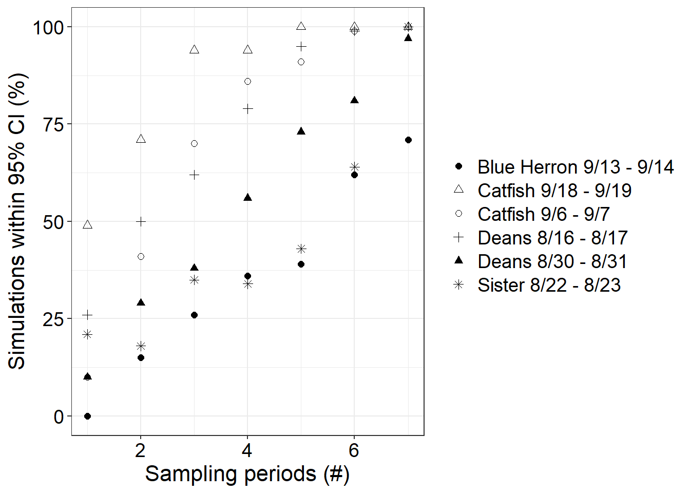
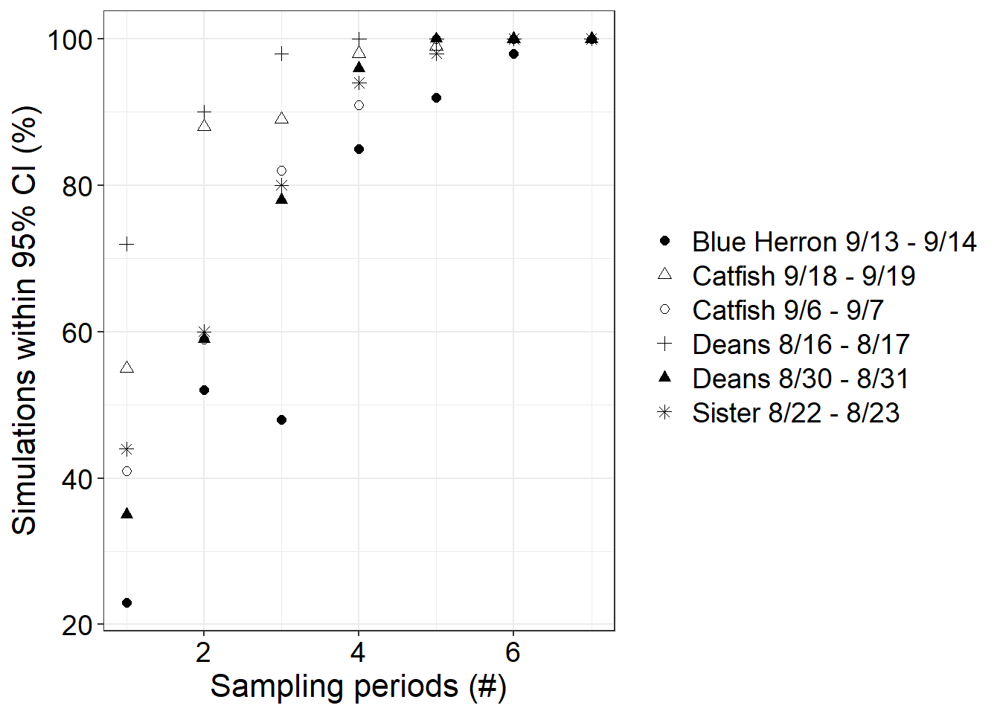
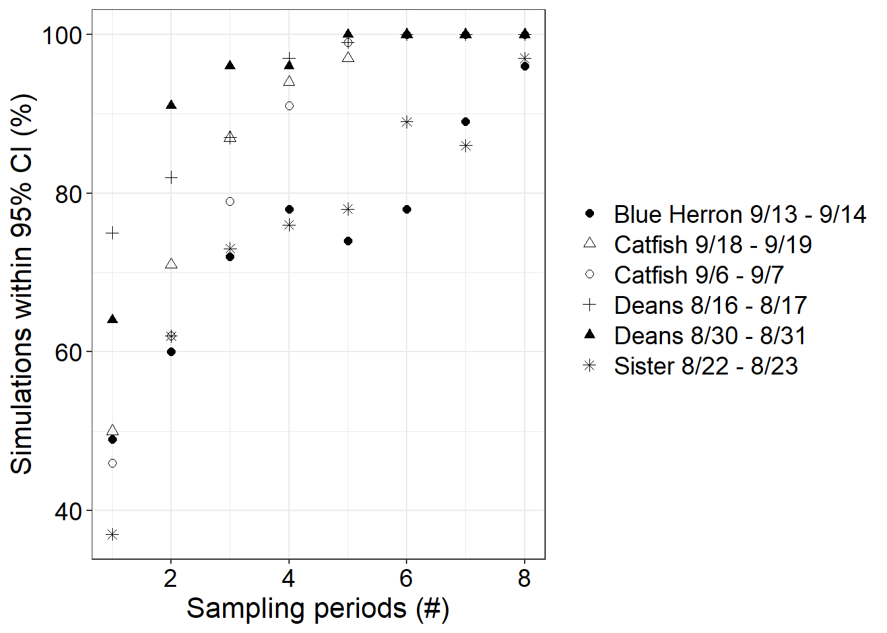

Chapter 12 Alternative sampling scheme simulations


## [1] "site" "date" "flux_round_diffusion_CH4" "flux_round_diffusion_CO2" "flux_round_ebullition_CH4"
## [6] "flux_round_2.5_diffusion_CH4" "flux_round_2.5_diffusion_CO2" "flux_round_2.5_ebullition_CH4" "flux_round_97.5_diffusion_CH4" "flux_round_97.5_diffusion_CO2"
## [11] "flux_round_97.5_ebullition_CH4" "type" "sampling"## # A tibble: 6 × 5
## site date four_rand_diff two_edge_diff two_edge_time_diff
## <chr> <chr> <dbl> <dbl> <dbl>
## 1 Catfish 2022-09-06 0.958 0.838 -0.0680
## 2 Catfish 2022-09-18 0.115 0.0487 -0.250
## 3 Deans 2022-08-16 0.852 0.634 -0.334
## 4 Deans 2022-08-30 0.741 0.598 -0.0286
## 5 Pick 2022-09-13 -7.48 -6.65 -1.14
## 6 Sister3 2022-08-22 0.0130 0.0301 -0.337## # A tibble: 6 × 5
## site date four_rand_diff two_edge_diff two_edge_time_diff
## <chr> <chr> <dbl> <dbl> <dbl>
## 1 Catfish 2022-09-06 -0.0741 -0.0754 -0.0668
## 2 Catfish 2022-09-18 -0.0186 -0.0201 -0.0163
## 3 Deans 2022-08-16 0.00186 0.00906 0.0281
## 4 Deans 2022-08-30 -0.000460 0.00720 -0.000829
## 5 Pick 2022-09-13 -0.0129 0.0356 -0.0660
## 6 Sister3 2022-08-22 -0.0587 -0.0592 -0.0324## [1] "C:/Users/laura/OneDrive/Documents/000UGA/Research/5-N-EWN/7-Chapter 1/chapter-one"


## png
## 2